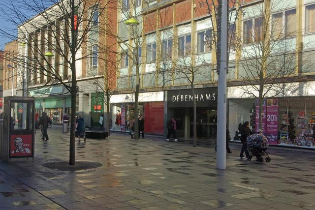
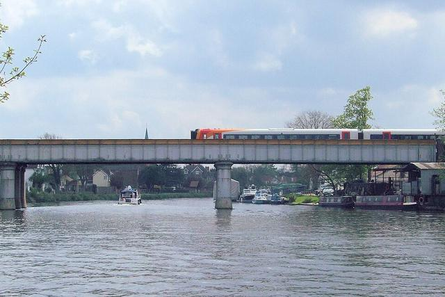
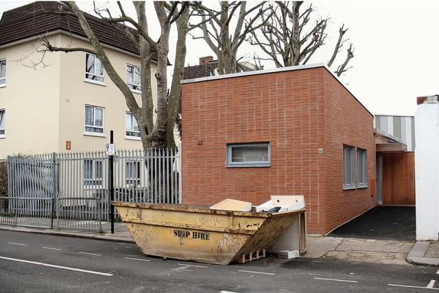
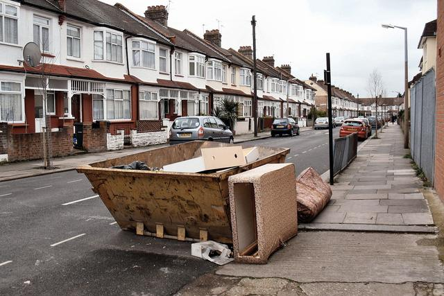
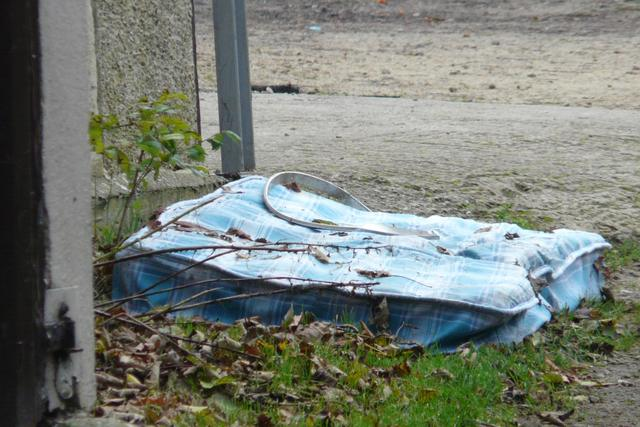
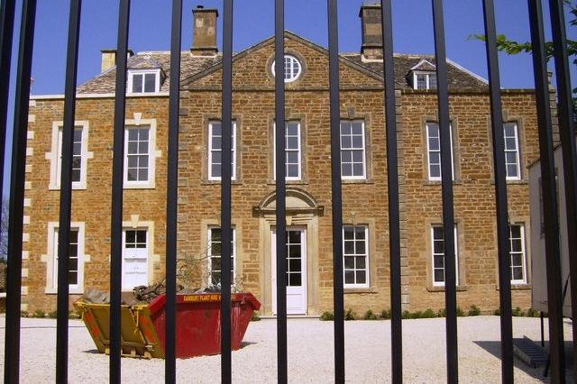

Photo credits
The photographs on this site are reused under Creative Commons licences from Wikimedia Commons. Thank you to the photographers. Each photo has been resized and, where noted, cropped. The photos are illustrations only: none of them shows a firm listed on this site, and no photographer endorses this site.
 A skip half full of household rubbish parked on a quiet residential street on a sunny day
A skip half full of household rubbish parked on a quiet residential street on a sunny day
By Bill Kasman, licensed under CC BY-SA 2.0, via Wikimedia Commons. Changes: cropped and resized.
Shoppers on Slough High Street
By Stephen McKay, licensed under CC BY-SA 2.0, via Wikimedia Commons. Changes: cropped and resized.
 Brunel's brick railway bridge over the River Thames at Maidenhead
Brunel's brick railway bridge over the River Thames at Maidenhead
By Colin Park, licensed under CC BY-SA 2.0, via Wikimedia Commons. Changes: cropped and resized.
The railway bridge over the River Thames at Staines-upon-Thames
By Jim Linwood, licensed under CC BY 2.0, via Wikimedia Commons. Changes: cropped and resized. The historic Market House with its clock tower on Uxbridge High Street
The historic Market House with its clock tower on Uxbridge High Street
By N Chadwick, licensed under CC BY-SA 2.0, via Wikimedia Commons. Changes: cropped and resized.
A skip parked on a residential road in London
By Alan Stanton, licensed under CC BY-SA 2.0, via Wikimedia Commons. Changes: cropped and resized.
A mattress and bed base dumped on the pavement next to a skip on a terraced street
By Alan Stanton, licensed under CC BY-SA 2.0, via Wikimedia Commons. Changes: cropped and resized.
A mattress fly-tipped on a patch of waste ground
By Gerald England, licensed under CC BY-SA 2.0, via Wikimedia Commons. Changes: cropped and resized.
Two skips on the gravel drive of a large brick house being restored, seen through iron railings
By Graham Horn, licensed under CC BY-SA 2.0, via Wikimedia Commons. Changes: cropped and resized.


Icons are line drawings based on Feather Icons (MIT licence). Skip illustrations are our own.